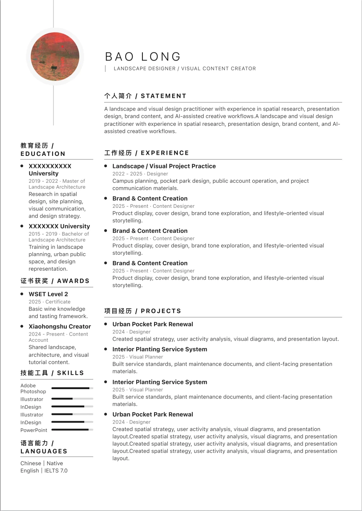
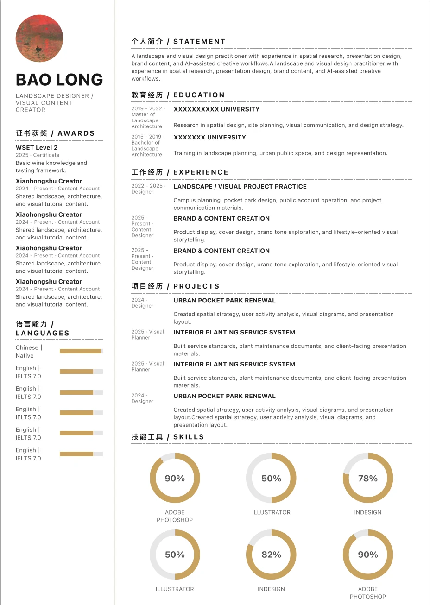
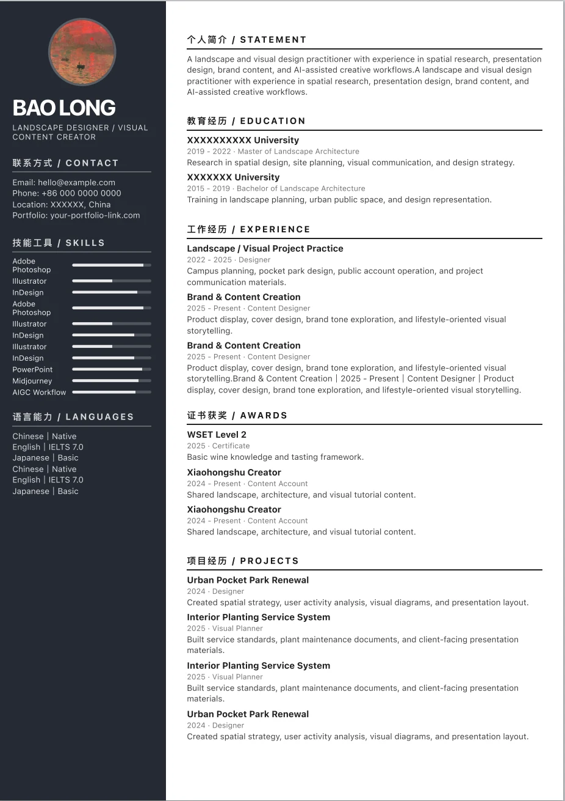
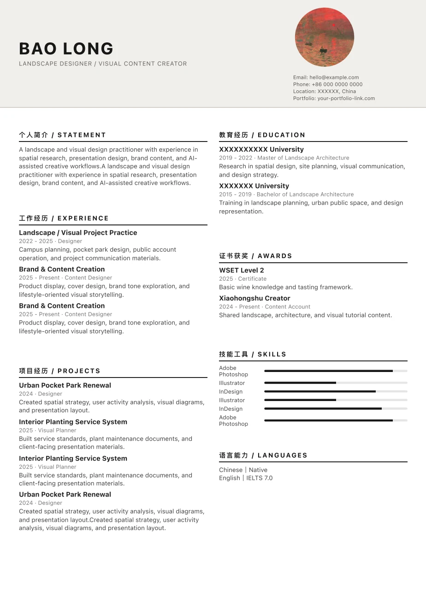
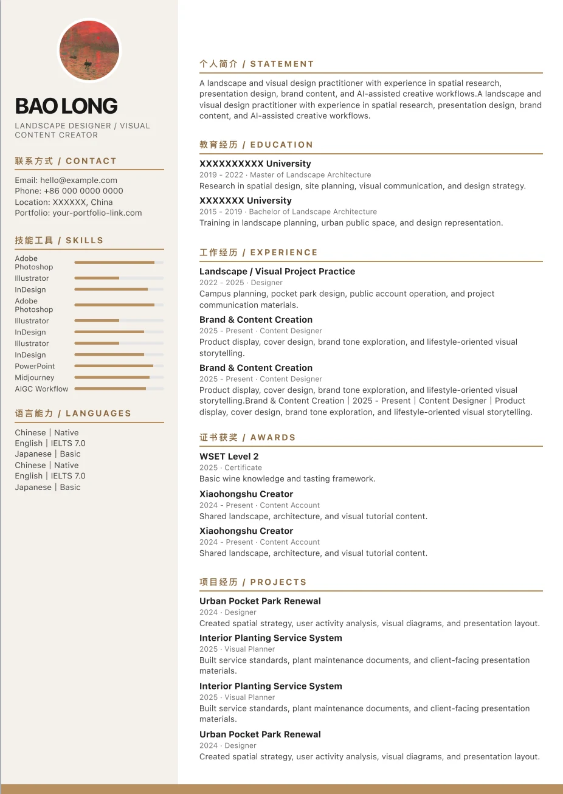
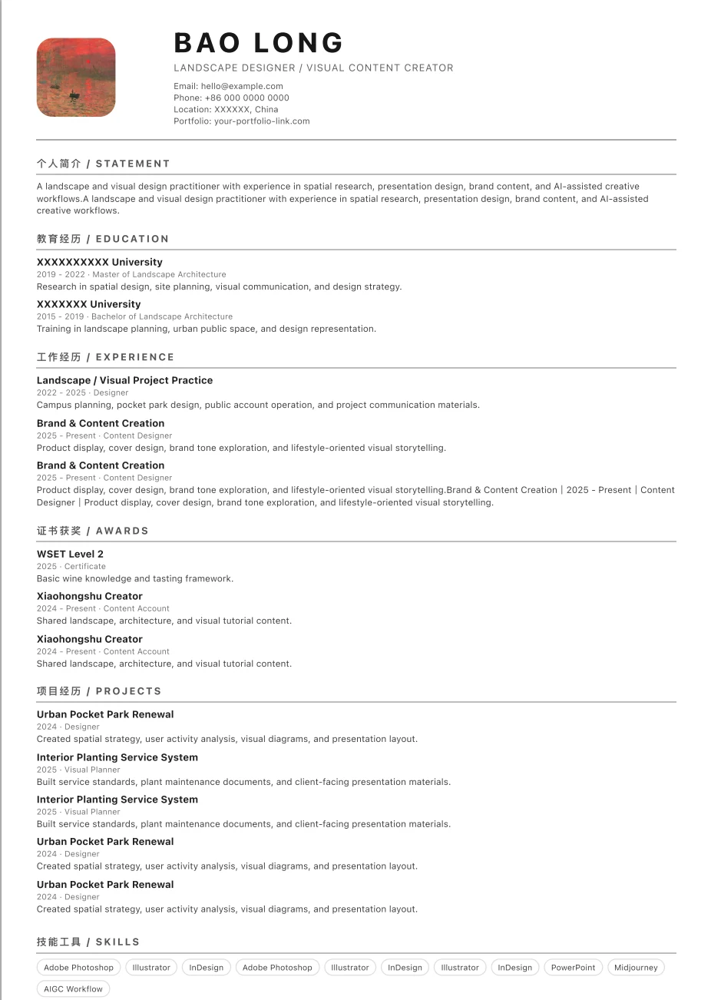
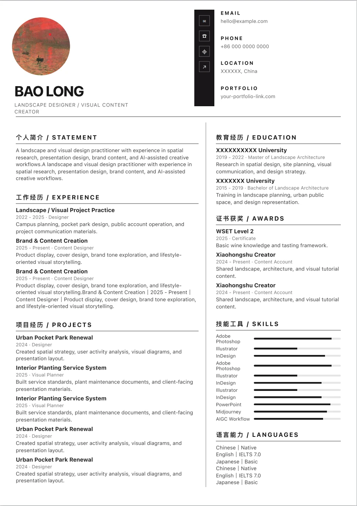
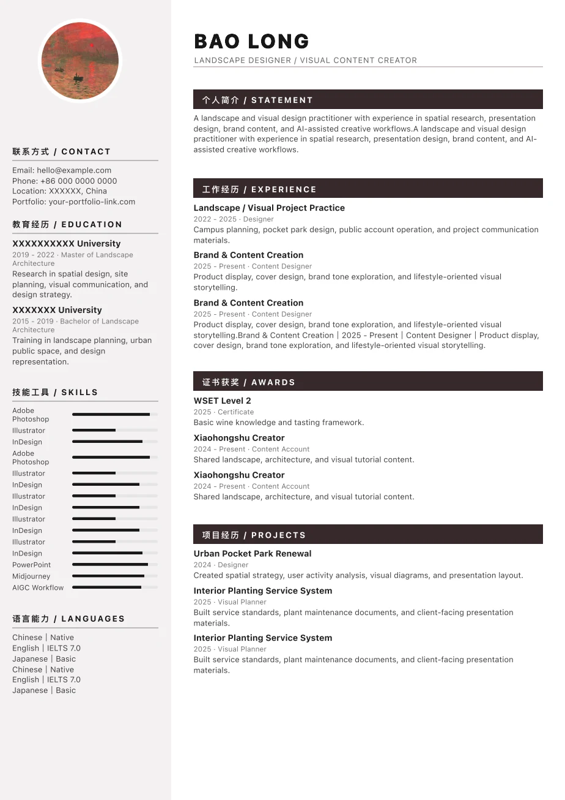
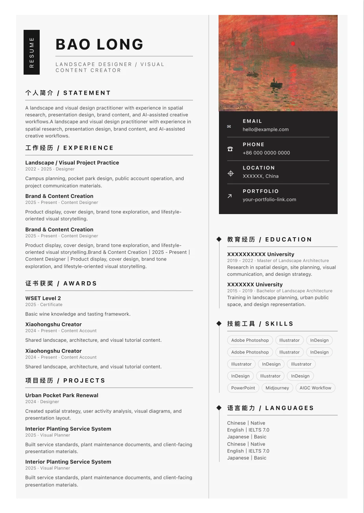

可编辑简历模板
+ AI 优化
Fill in your information once, switch between templates, polish experience with AI, generate summaries, translate resume content and export a PDF in one click.
Upload an old resume image or file. When recognition is available, it can extract content into the resume form. Supports common formats such as JPEG, JPG, PNG, Word and PDF.
简历模板
Preview real finished resume examples to compare styles and layout differences quickly.
01 Linear
清晰稳重，适合通用求职。
02 Sidebar
信息层级明确，适合设计类简历。
03 Minimal
留白更多，适合高级简洁风。
04 Warm
轻商务感，适合内容运营和产品岗位。

05 Gold
更有记忆点，适合个人品牌表达。

06 Business
正式专业，适合企业岗位投递。

07 Header
顶部信息突出，适合强标题型简历。

08 Compact
信息密度高，适合一页压缩。

09 Editorial
杂志排版感，适合视觉和内容岗位。

10 Metroline
双栏线性排版，适合成熟专业表达。

11 Profile
头像信息栏搭配正文经历，稳重简洁。

12 Portrait
商务双栏，突出主经历与个人信息。
使用流程
Complete resume creation through clear steps: fill in information, choose a template, polish and export.
填写一次
Fill in basic information, education, work experience and project experience once.
选择模板
Switch templates to preview different job-application styles quickly.
AI 优化
Use 3 free AI polish attempts per day to simplify wording and highlight results.
导出 PDF
Export a PDF after confirming the layout for applications or further editing.
准备好生成你的简历了吗？
进入工具页后，可以继续使用完整的简历生成器功能。